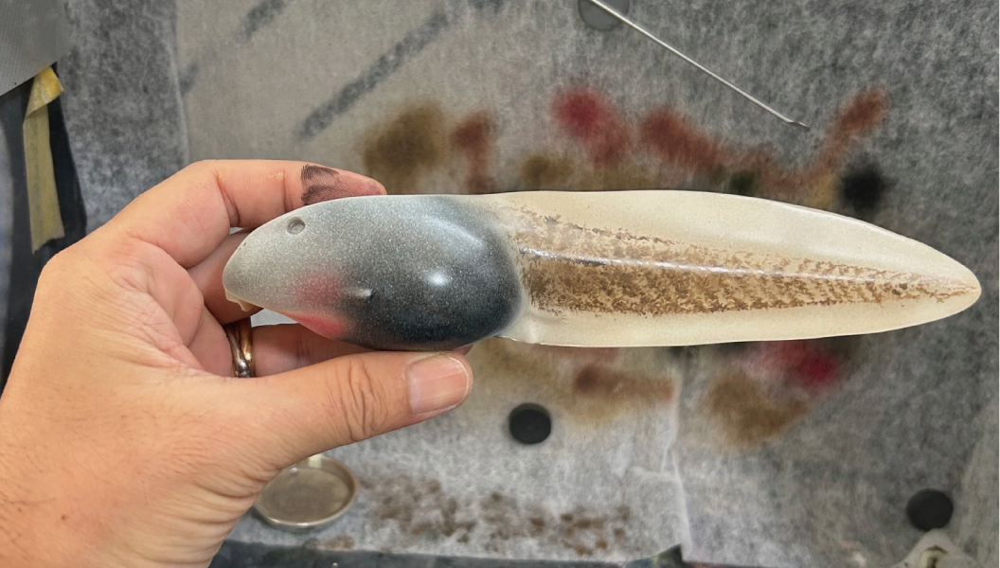
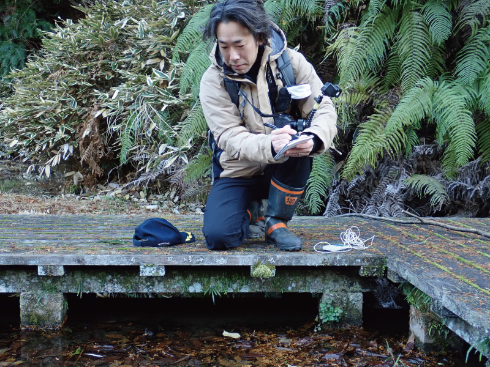

My Connection to Tadpoles
I first became fascinated by tadpoles when I was about five years old. The memory of discovering living creatures in shallow rice paddies—changing their form day by day—remains vivid even now.
In my hometown, there is a teacher whom I consider my “mentor in frogs.” When he fell seriously ill four years ago, I realized how much I had learned from him over the years. I began to strongly feel that, just as he had done for me, I wanted to share the fascination of nature with children myself. Fortunately, he has since recovered, and I am grateful that we can still go out together to observe frogs and tadpoles.
Tadpoles are soft, constantly changing forms of life, and they cannot be fully captured by 3D scanning alone. That is precisely why I seek to express, in three dimensions, the softness and light of life that can only be felt through direct observation.
Research and Observation
My primary observation fields are familiar watersides in the Tokai and Kanto regions of Japan. While I have also conducted observations in various regions both domestically and internationally for comparison, my interest does not lie in rare species or extreme environments.
Rather, I focus on the species that are “common and easily overlooked,” and how they live and change over time. I believe there is great value in continuing to observe what is considered ordinary.
This attitude—continuing to look closely at what is familiar—is one of the most important principles I learned from my mentor. Even without traveling far or visiting special locations, observing the same place day after day reveals changes and discoveries that cannot be seen otherwise. In fact, it is within everyday, familiar nature that new insights are often hidden.
My current work in observing, recording, and creating three-dimensional representations of tadpoles is guided by this philosophy.
I earned my Ph.D. from the Faculty of Agriculture at the University of Tokyo, where I studied electron transport systems in anaerobic respiration of microorganisms. Although this research was not directly related to frogs or tadpoles, the experience of learning about delicate chemical reactions and invisible mechanisms within living systems forms the foundation of my current work.
I am currently working as an independent researcher, continuing observations, documentation, and research on familiar living organisms with the support of former laboratories, fellow researchers, and colleagues met through academic societies and fieldwork. I believe that even without belonging to a specialized laboratory, steady accumulation of careful observation can lead to a deeper understanding of ecology. Through conference presentations and exhibitions, I aim to share the depth and richness of everyday nature with a wider audience.
Sculpting and Expression
In my figure-making, I faithfully reproduce characteristics observed in real specimens, while applying subtle deformation to convey a sense of life. Every step—from sculpting to painting—is done by hand, with great care given to translucency, posture while swimming, and the texture of living organisms.
To achieve realism, I consider the position of internal organs, surface texture, distribution of pigment cells, and even the layered structure of the skin in actual specimens during painting. I view not only the finished figures, but also the creation process itself, as part of observation and expression.

The work reflects attention to internal structure and pigment cell distribution.
My modeling skills have been refined through years of plastic model building since childhood, as well as experience winning awards at national-scale model competitions. Above all, however, my priority is creating forms and paintwork that truly convey the appeal of living creatures.
Thoughts on Education
Observing nature is the first step in science. Just as I learned from my mentor, I want to share with children the joy of noticing, thinking, and feeling. With this in mind, I hope to engage in exhibitions and workshops at schools and museums.
I believe that paying attention to familiar nature is the shortest path to feeling closer to the natural world and appreciating the resilience of living organisms.
Research Activities (Conferences and Publications)
My research activities focus on ecology and education, centered on tadpole observation and three-dimensional representation. Building on my background in basic research, I now place emphasis on methods for communicating familiar living organisms.
- 2026 (planned) Educational conference presentation｜ Report on educational practice using tadpole figures
- 2026 (planned) Ecological society presentation｜ Study on overwintering ecology of tadpoles of the Japanese rice frog
-
2025
The 64th Annual Meeting of the Herpetological Society of Japan (Japan–Taiwan Joint Meeting)｜
Proposal on the usefulness of figures in tadpole morphological observation and their application as educational materials
-
2020
Data in Brief｜
Dataset for de novo transcriptome assembly of the African bullfrog
- 2020 JSPS Grant-in-Aid for Scientific Research (Encouragement Research)｜ Study on the mechanisms of aestivation in the African bullfrog
Inquiries about Projects and Collaboration
I accept individual inquiries regarding tadpole figure production and activities related to education and exhibitions, depending on the content.
If you are interested in work that values research and observation backgrounds, or production intended for educational settings, please feel free to contact me.
*Please note that some requests may not be accepted depending on content and schedule.
Profile

Morphological details are carefully documented and reflected in sculptural work, along with behavioral observations.
- Name
- Naoki Yoshida
- Degree
- Ph.D. (Agricultural Science)
- Activity
- Independent researcher / Tadpole figure artist
- Main Fields
- Observation, documentation, exhibition, education, model making
- Field Areas
- Mainly Tokai and Kanto regions, Japan